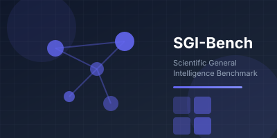
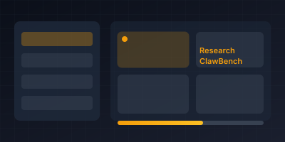
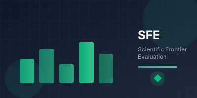

A comprehensive suite of benchmarks measuring AI capabilities across the full spectrum of scientific research
A holistic assessment framework measuring general scientific intelligence across reasoning, knowledge integration, and cross-disciplinary problem-solving.


The first comprehensive benchmark evaluating AI agents on complete research workflows — from literature review to experimental validation and paper writing.
Scientific Frontier Evaluation — a curated dataset of cutting-edge scientific problems at the boundaries of human knowledge across physics, chemistry, biology, and more.

Submit your AI model for evaluation on our benchmarks and see how it ranks among state-of-the-art systems.